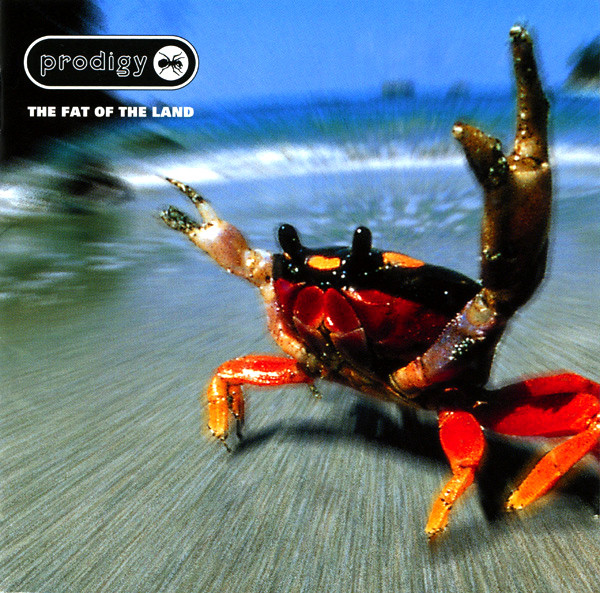

CD
The Fat Of The Land
The Prodigy
Media: — · Sleeve: —
—
Personal
Discogs SuggestedCA$24.47
Discogs MedianCA$24.47
Discogs HighCA$24.47
- Physical Copy ID
- BB-CD-2414
- Year
- 1997
- Label
- XL Recordings
- Catalog #
- XLCD 121
- Country
- GBUK
- Genre / Style
- Electronic, Hip Hop · Breakbeat, Big Beat